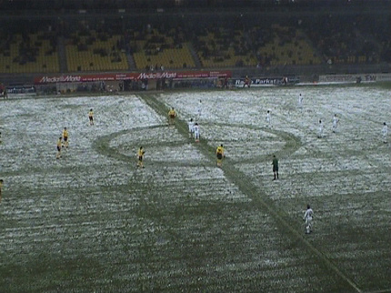
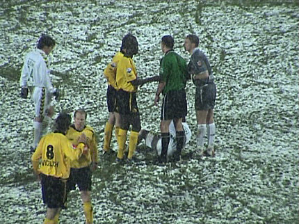
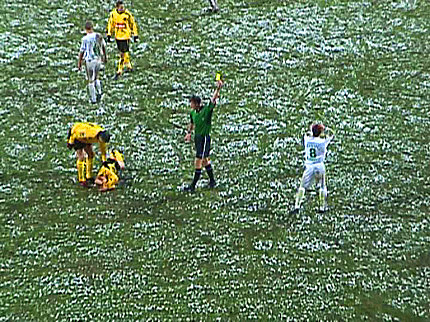
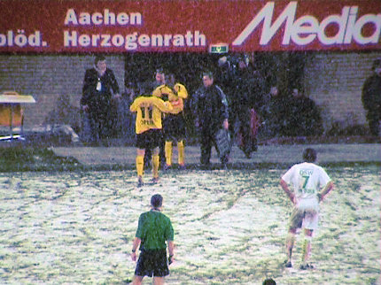

|
Roda JC - ADO Den Haag (3-1) 27 december 2005
|
Sneeuwbuien bij minus 2 graden.

Het veld wordt bespeelbaar geacht.
De hoofddoek heeft zijn intrede gedaan in Z16.
De ADO-supporters boycotten de verplichte buscombi. Toch nog een kleine
50 supporters.
De doorgebroken speler Sergio wordt neergemaaid. Boosdoener Saveedra
komt er met geel vanaf.
In de 38e min. loopt hij tegen een tweede gele kaart aan en mag derhalve
inrukken.
Prima goal, maar hij wordt ten onrechte afgekeurd. Weliswaar stond Cissé
buitenspel, doch niet hinderlijk.
Het komt wel eens vaker voor bij grensrechters die voor hun verjaardag een
nieuwe vlag hebben gekregen: ze blijven ermee zwaaien....
.... dan krijg je vanzelf sneeuwballen om je oren en moet de scheids er aan
te pas komen om via de omroeper het publiek tot kalmte te manen.
Onvriendelijkheden bij de voorbereiding voor een Haagse corner.
Kujovic vraagt de westsiders te stoppen met sneeuwballen gooien.
Het pils was lekker koel vanavond.
Daar izzie weer, deze keer met twee halve liters caffeïne.
ADO gaat tijdrekken. Nummer 3 is Saeijs die onopvallend speelde.

Daar ligt er weer een.
In de 76e minuut stuurt Oper de bal naar Vicelich die genadeloos hard
uithaalt en 1-0 scoort.

Veel sneeuw maar nog meer kaarten; hier is Rankovic aan de beurt na een
aanslag op Lachambre.
2-0 door Oper, (82').
Nauwelijks twee minuten later is er een opstootje tussen Bodnar en Kolkka.
Kolkka trapt Bodnar waarop de Hongaar terugslaat.
Het loopt aardig uit de hand. Als de gemoederen zijn gesust krijgt Bodnar
rood en Kolkka geel.
Auf wiederschnitzel!
Met 10 tegen 10 wordt het opeens weer superspannend als Kolkka in de
86e min. 2-1 scoort.
In de slotfase vallen de gewonden plots aan Roda-zijde. De wederom
teleurstellende Cissé is al in de 67e min. vervangen door Cristiano die naar
verwachting de plaats van Sekou gaat overnemen.

Drie minuten extra speeltijd. In de 92e min. komt Sonko voor Oper.
Na een afgeslagen corner van ADO schuift Sonko de bal naar Bodor.
Deze kan geheel vrij op keeper de Vries af en scoort beheerst 3-1, (93').
In de 94e min. mag Colinet Sergio aflossen, maar het is dan "game over".
Oper in gesprek met HBB'er Stafke Mirakel.
De zoekende blik van
Sergio treft...
... Kevin en Debby.
Dolblij met een handtekening in de nek.
Behalve Sergio en Oper bezocht ook Begois de Kickoff.
Ga je in goed vertrouwen parkeren op de FP-parkeerplaats, blijkt dat ze je
auto geeneens sneeuwvrij houden.
©
Koempels Pleasure Dome
|